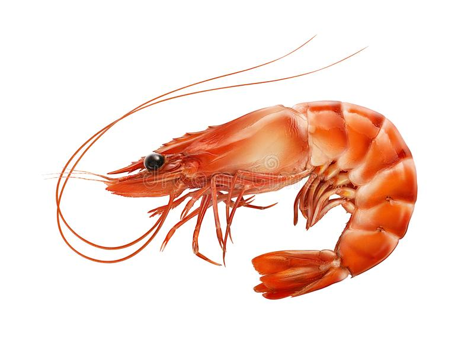
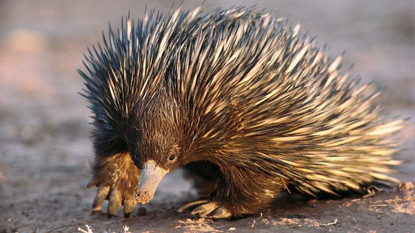
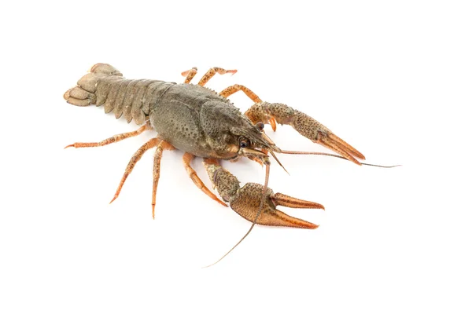

• O R N I T O R R I N C O •
ALIMENTAÇÃO DOS ORNITORRINCOS
Os ornitorrincos são carnívoros e se alimentam principalmente de invertebrados e vários pequenos animais aquáticos.
Alguns itens comuns incluem presas de vermes, camarões, lagostins e larvas de insetos. Essas criaturas caçam enquanto
nadam e usam seus bicos para sentir as correntes eletromagnéticas de suas presas. Este método de caça é muito
semelhante aos tubarões, que usam ampolas de Lorenzini para detectar campos eletromagnéticos.
Ao contrário de outros animais, o ornitorrinco não se alimenta pelo cheiro ou pela visão. Quando mergulha, o animal
fecha o nariz, as orelhas e os olhos. Ao cavar no fundo das correntes, o ornitorrinco usa eletrorreceptores especiais
para detectar as correntes elétricas geradas pelas contrações musculares de suas presas. Dessa forma, o ornitorrinco
é capaz de distinguir entre objetos inanimados e animais aquáticos, camarões ou peixes.



Ele pega sua presa enquanto nada ou usa seu focinho para cavar sua presa no leito do rio e depois come a presa na
superfície onde é transportada em suas bochechas. A cada dia, o ornitorrinco precisa comer até 28% de seu próprio
peso. Isso é como um ser humano de 150 quilos comendo 30 quilos de comida todos os dias!
Por esse motivo, o ornitorrinco passa diariamente procurando comida em média 12 horas. Eles gostam de caçar
principalmente à noite em lugares remotos e escuros. Quando comem, trituram a comida com esponjas na boca porque
não têm dentes.